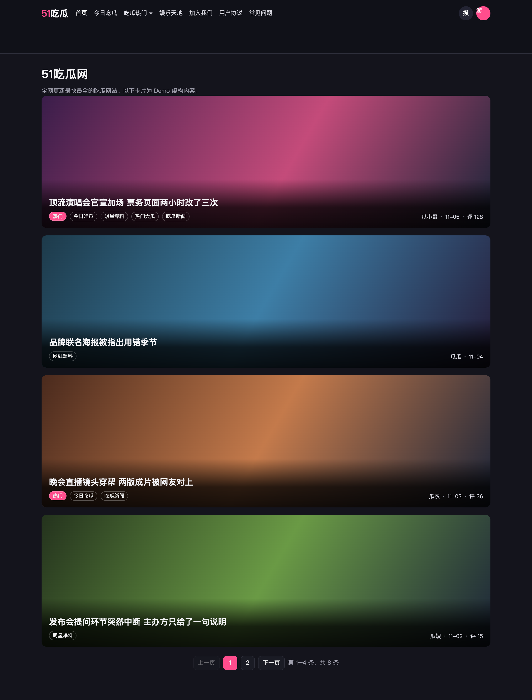
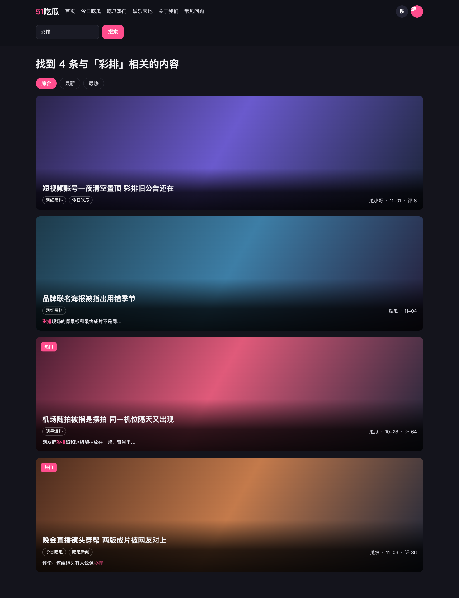
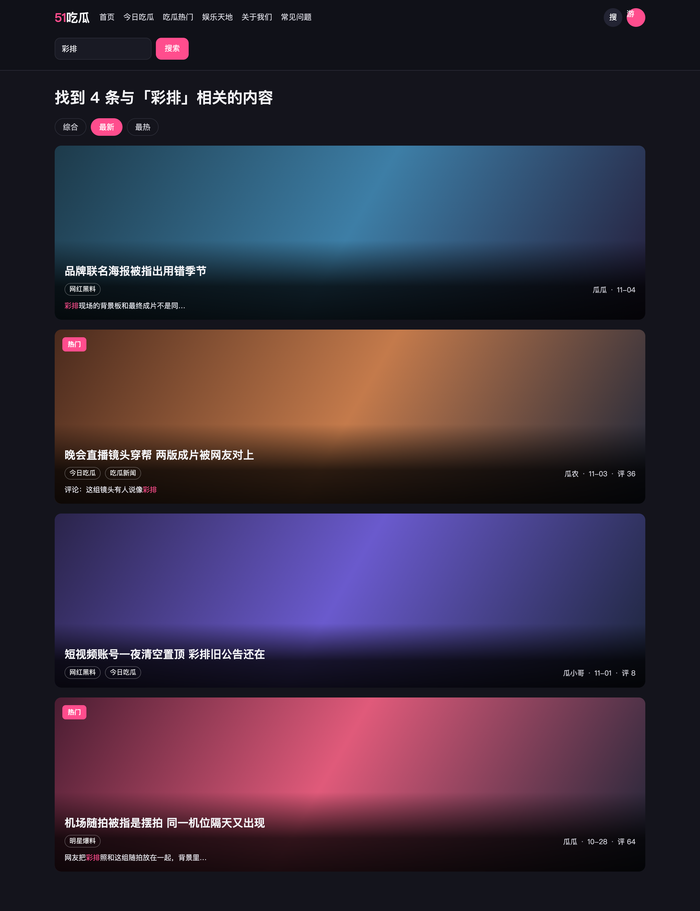
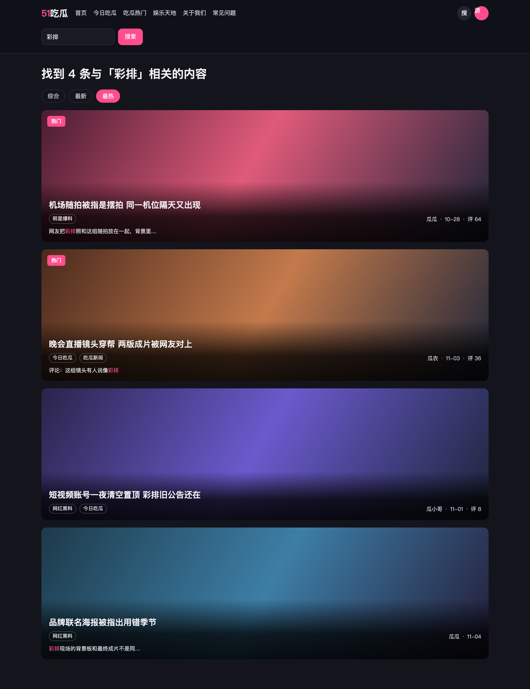
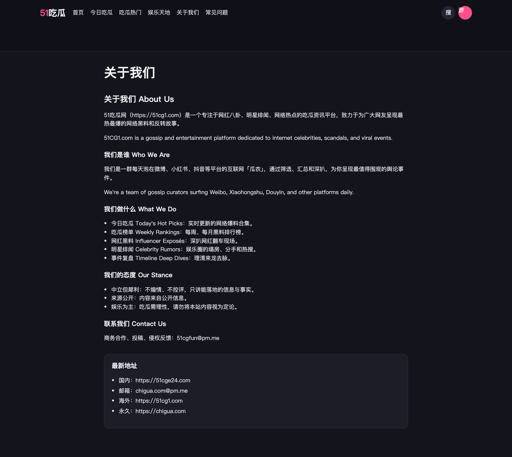
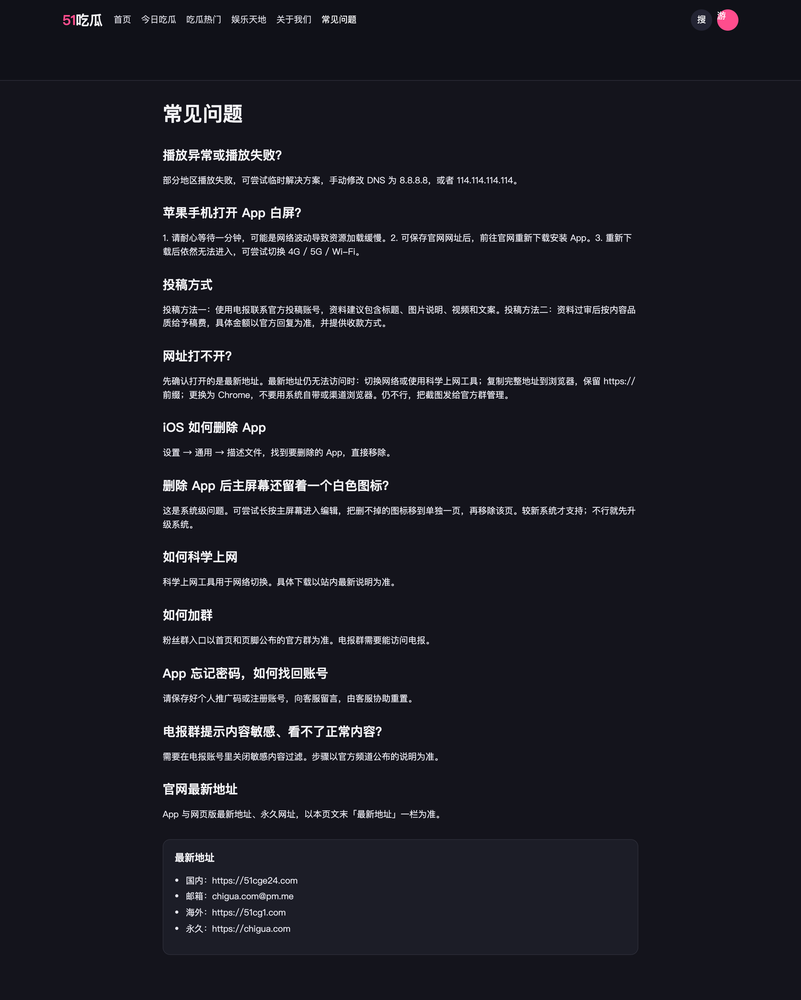

51吃瓜 · 首页卡片、搜索与说明页
版本 1.0 · 2026-11-05 · 适用端：51吃瓜 Web。截图可点击放大。顶栏「Demo」打开可点原型。
版本目的 / 需求背景
首页卡片把作者、长日期、多个分类和「热门」挤在一行，热门只是红字，评论数看不到。搜索页只有「包含关键字 xxx 的文章」，没有总条数，也不能按最新 / 最热重排；标题对不上关键词时，用户看不出为什么命中。
说明页模板不统一。常见问题是独立的 faq 模板，没有评论和应用广告。关于我们、加入我们走普通页面，正文前会压上广告，页底还有评论。说明页的任务是把话说完，不是再导一屏广告或收评论。
本期做：重排首页与搜索结果卡片；搜索展示总条数，并提供综合、最新、最热；标题未命中时给出摘要；说明页统一为「正文在前、最新地址在后、无评论、无正文前广告」。
本期不做：搜索无结果空态；文章详情页改版；把评论数做成第二个封面角标；为说明页补评论或补顶部广告。首页原有分页、分类频道仍在，本期只改卡片信息结构，不改频道信息架构。
业务对象：来吃瓜的读者，以及维护关于我们、常见问题、加入我们、协议和回家的路的运营。预期：扫卡片能分清热门、时间和讨论热度；搜索能知道有多少条、为什么是这条；打开说明页先看到正文。
需求功能矩阵
| 功能ID | 模块 | 名称 | 描述 |
|---|
| FC-01 | 列表 | 首页与搜索卡片 | 封面左上角热门胶囊；底部两行：标题，以及同一行里的分类标签和作者、短日期、评 N。 |
| FC-02 | 搜索 | 条数与排序 | 标题写找到 N 条。排序为综合、最新、最热，默认综合。综合按标题、正文、评论、标签的相关度从高到低。 |
| FC-03 | 搜索 | 命中摘要 | 标题未含关键词时，在第二行下方展示摘要，并把关键词标出。 |
| FC-04 | 说明页 | 官方说明页结构 | 关于我们、常见问题、加入我们、协议、回家的路：正文前无广告，无评论，最新地址在正文后。 |

首页：热门在封面左上角。底部两行，标题一行，分类标签与作者、时间同一行。
FC-01
首页与搜索卡片
功能逻辑
首页信息流和搜索结果使用同一张卡片。封面图区域左上角只放「热门」。封面底部两行：第一行标题，第二行左侧分类标签、右侧作者和时间。搜索命中摘要接在这一行下面，规则见 FC-03。
业务规则
- 封面比例沿用现网 1920×565，宽扁横幅。标题、元信息、分类叠在封面底部，不在封面下方再垫一块等高区域。
- 热门角标：运营标记为热门时，封面左上角显示红底白字胶囊「热门」。未标记不占位。
- 热门角标不跟评论数挂钩，也不参与「最热」或「综合」的计算。最热用 FC-02 的热度公式，综合用 FC-02 的相关度。
- 封面底部固定两行。第一行是标题，最多两行，超出省略。
- 第二行左侧是分类标签，样式为描边胶囊，按文章已挂分类的配置顺序全部展示。现网一篇可以挂到 4 个，也可以更多。这一侧排满后标签换行，不改成纯文字。
- 第二行右侧是作者、短日期、评 N，顺序固定，短日期为月-日，例如 11-05。评论数为 0 时不显示「评 0」。
- 作者、日期、分类、「热门」不再写进同一句灰色小字。
页面交互
- 首页列表顺序沿用现网，按发布时间倒序。
- 卡片点击进入该文现网文章详情。本期不改详情页。
异常
- 封面图加载失败：保留底部信息区和热门角标，封面区用深色底，标题仍完整按两行规则展示。
- 无作者：元信息作者位显示「匿名」。
- 无分类：第二行只保留作者、短日期、评 N。
数据流转
卡片读标题、作者、发布时间、评论数、分类列表、热门标记。评论数用已对读者可见的评论条数。热门标记由运营字段单独下发。

默认「综合」：标题命中排在正文命中前面，只在评论里出现的再靠后。

「最新」只按发布时间从新到旧，同一批结果，条数不变。

「最热」按热度从高到低重排，条数不变。
FC-02
搜索条数与排序
功能逻辑
提交关键词后进入搜索结果。页头写清总条数，结果用 FC-01 卡片。排序有「综合」「最新」「最热」，进入搜索时默认「综合」。三套排序使用同一批命中文章，切换只改变顺序。
综合看相关度。相关度按关键词出现的位置加分，位置越能代表这篇文章在讲这件事，分越高。分高的排在前面。
业务规则
- 页头文案：「找到 N 条与「关键词」相关的内容」。N 为全部命中条数，不是当前页条数。
- 有分页时，页码条另写「第 A–B 条，共 N 条」。
- 命中范围：标题、正文、标签、已对读者可见的评论。关键词要在该字段里连续出现，不区分大小写。标题、正文、标签、评论任一处命中，文章就进入结果。
- 相关度按位置加分，同一位置无论出现几次只加一次。多个位置同时命中，分值相加。
- 标题命中加 100。正文命中加 50。已可见评论命中加 20。标签命中加 10。标签就是卡片上的分类。
- 待审核、已下架的评论不参与命中，也不加相关度。
- 「综合」：按相关度从高到低。相关度相同，按发布时间从新到旧。
- 「最新」：只按发布时间从新到旧。相关度和热度不改变这个顺序。
- 「最热」：热度 = 近 7 天审核通过的评论数 × 5 + 累计浏览量。浏览量只计 App 文章详情的访问。点赞、收藏不计入热度。热度相同，按发布时间从新到旧。
- 卡片上的「评 N」是读者能看到的评论条数，只负责展示。它不参与热度，也不参与相关度。
- 切换排序回到第 1 页，关键词不变，N 不变。
- 空关键词点搜索：不进入结果页。
页面交互
- 顶栏搜索图标展开输入框。输入后点「搜索」或回车，打开结果并默认选中「综合」。
- 点「综合」「最新」或「最热」立即重排，当前项高亮。
异常
- 未输入关键词就搜索：Toast「先输入关键词」，停留在当前页，不发请求。
- 搜索接口失败：结果区改为「搜索失败，请再试一次」，保留关键词和输入框，排序不切换。
- 请求返回后关键词已被用户改掉：丢弃这次结果，不覆盖当前输入。
数据流转
请求带关键词、排序和页码。响应给总条数、相关度、热度、命中位置和卡片字段。总条数以本次过滤后的全集为准，翻页不重新计数。
标题命中不加摘要。正文命中、只在评论里命中时，在第二行下方标出关键词。
FC-03
命中摘要
功能逻辑
一条结果只要标题、标签、正文或可见评论命中关键词即可出现。标题里已经有关键词时，卡片不再加摘要。标题没有、正文有时，在第二行下方给一行正文摘要，并把关键词标出。标题和正文都没有、只有标签命中时，摘要写分类名。只有评论命中时，摘要摘评论里的那一句。
业务规则
- 命中范围与计分位置见 FC-02。摘要只负责说明这条为什么出现，不另算一套相关度。
- 标题包含关键词：不展示摘要行。
- 标题不包含、正文包含：摘要截取正文命中处前后约一句，关键词用主题色标出。前后被截断时加省略号。
- 标题和正文都不包含、标签包含：摘要文案为「分类包含「分类名」」。
- 只在可见评论里包含：摘要前加「评论：」，后面截取评论命中处前后约一句，关键词用主题色标出。
页面交互
异常
- 关键词只命中已下线或不可见正文：不计入 N，不出现在列表。
- 摘要原文超长：仍只保留命中处前后一句，不展开全文。
数据流转
检索在可见内容上完成。摘要由正文命中位置现截，不另存一份摘要字段。

关于我们：先正文，最新地址在文末，无评论、无正文前广告。

常见问题与关于我们同一套说明页结构。
FC-04
官方说明页
功能逻辑
关于我们、常见问题、加入我们、用户协议、隐私政策、回家的路同属说明页。读者打开后先看正文，读完再看到「最新地址」。说明页不承接评论，也不在正文前插入应用广告。
业务规则
- 适用页面：关于我们、常见问题、加入我们、用户协议、隐私政策、回家的路。
- 正文前不放应用广告墙、导航外链墙或其它导流图。
- 页面不提供评论列表，也不提供发表框。
- 文末固定一块「最新地址」，放在正文之后。字段为国内地址、邮箱、海外地址、永久地址，文案读站内现有配置。
- 常见问题正文里如果某一条本身在回答地址，保留该条；文末「最新地址」仍然要有，作为全站说明页的统一收口。
- 吃瓜正文页继续使用现有的广告、相关热瓜和评论，不套这套说明页。
页面交互
- 从顶栏或页脚进入说明页，直接落在正文标题。
- 「最新地址」里的链接按现网方式打开。
异常
- 某一条地址配置为空：该行不展示，其它行照常。四条都空时不渲染整块「最新地址」。
- 说明页被误配成带评论的普通文章：前台仍不渲染评论区。
数据流转
说明页读各自正文。最新地址读全站地址配置，不写进某一篇文章的正文里才能显示。评论接口对说明页不请求。
验收
| 功能ID | 验收标准 |
|---|
| FC-01 | □ 封面比例 1920×565 □ 热门为封面左上角红底白字；非热门不占位 □ 底部两行：标题，以及同一行的描边分类标签和作者、月-日、评 N □ 0 条评论不显示 □ 分类按已挂数量全部展示，排满换行 |
| FC-02 | □ 页头为找到 N 条 □ 默认综合，可切最新、最热，三条结果集相同 □ 综合按标题 100、正文 50、可见评论 20、标签 10 相加，同位置只计一次，高分在前，同分按时间 □ 最新只按时间 □ 最热 = 近 7 天通过评论 × 5 + 累计浏览量 □ 空关键词 Toast「先输入关键词」 |
| FC-03 | □ 标题已含关键词无摘要 □ 仅正文命中有带标色的摘要 □ 仅标签命中写「分类包含「分类名」」 □ 仅评论命中以「评论：」起头 |
| FC-04 | □ 六类说明页正文前无广告、无评论 □ 最新地址在正文后 □ 吃瓜正文页仍保留广告与评论 |